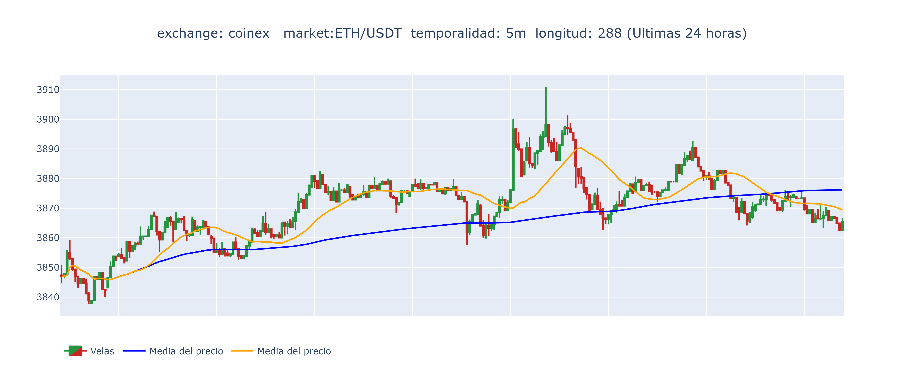
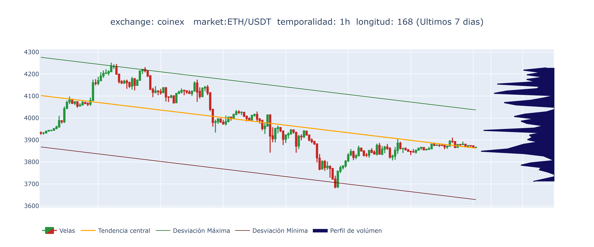
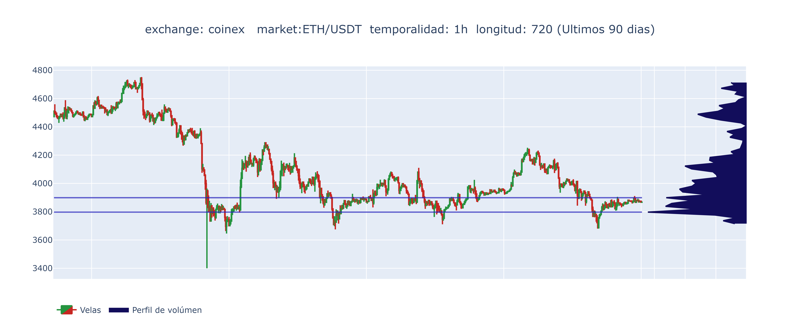

|  | Crecimiento total: 0.472 % Crecimiento aproximado por hora: 0.020 % Tiempo estimado para alcanzar 1 %: 50.9 horas Precio inicial: 3847 USDT Precio minimo: 3838 USDT precio maximo: 3911 USDT Ultimo precio: 3866 USDT |
Se analizó el mercado ETH contra USDT y se graficaron 288 velas de temporalidad 5 minutos, que abarcan las últimas 24.0 horas. La linea de tendencia central del grafico muestra un crecimiento de 0.47 %. El mercado esta creciendo a una velocidad aproximada de 0.02 % por hora. A esa velocidad de crecimiento, se necesitarian 50.87 horas para alcazar una ganancia de 1%.
|  | Crecimiento total: -1.671 % Precio inicial: 3933 USDT Precio minimo: 3680 USDT precio maximo: 4252 USDT Ultimo precio: 3867 USDT Desviacion media por encima y debajo de tendencia: 70.33 % Desviacion maxima por encima: 174.06 % Desviacion minima por debajo: -233.93 % Media por encima de tendencia: 76.35 % Media por debajo de tendencia: -66.13 % Volumen significativo cercano a: 3849 USDT Volumen significativo cercano a: 3944 USDT Volumen significativo cercano a: 4112 USDT |
Se analizó el mercado ETH contra USDT y se graficaron 168 velas de temporalidad 1 hora, que abarcan las últimas 168.0 horas. La linea de tendencia central del gráfico muestra un decrecimiento de menos 1.67 %. El precio del activo esta cayendo a una velocidad aproximada de 0.01 % por hora. A esa velocidad de caida, se necesitarian 100.52 horas para perder 1% del valor. Se detectaron 3 niveles significativos de volumen cercanos a los siguientes precios: 3849 USDT, 3944 USDT, 4112 USDT, Se debe atender a la evolución del mercado teniendo en cuenta que en cada uno de estos niveles de precio se pueden producir múltiples operaciones compra y venta, haciendo que el nivel actue como soporte o resistencia en dependencia de si el precio esta por encima o por debajo.
|  | Crecimiento total: -13.519 % Precio inicial: 4472 USDT Precio minimo: 3400 USDT precio maximo: 4752 USDT Ultimo precio: 3867 USDT Volumen significativo cercano a: 3797 USDT Volumen significativo cercano a: 3899 USDT |
Se analizó el mercado ETH contra USDT y se graficaron 720 velas de temporalidad 1 hora, que abarcan las últimas 720.0 horas. La linea de tendencia central del gráfico muestra un decrecimiento de menos 13.52 %. El precio del activo esta cayendo a una velocidad aproximada de 0.02 % por hora. A esa velocidad de caida, se necesitarian 53.26 horas para perder 1% del valor. Se detectaron 2 niveles significativos de volumen cercanos a los siguientes precios: 3797 USDT, 3899 USDT, Se debe atender a la evolución del mercado teniendo en cuenta que en cada uno de estos niveles de precio se pueden producir múltiples operaciones compra y venta, haciendo que el nivel actue como soporte o resistencia en dependencia de si el precio esta por encima o por debajo.